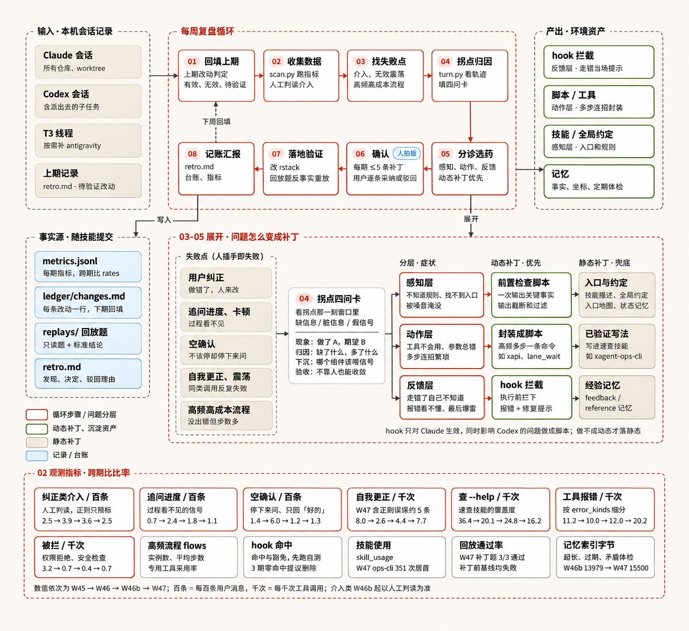
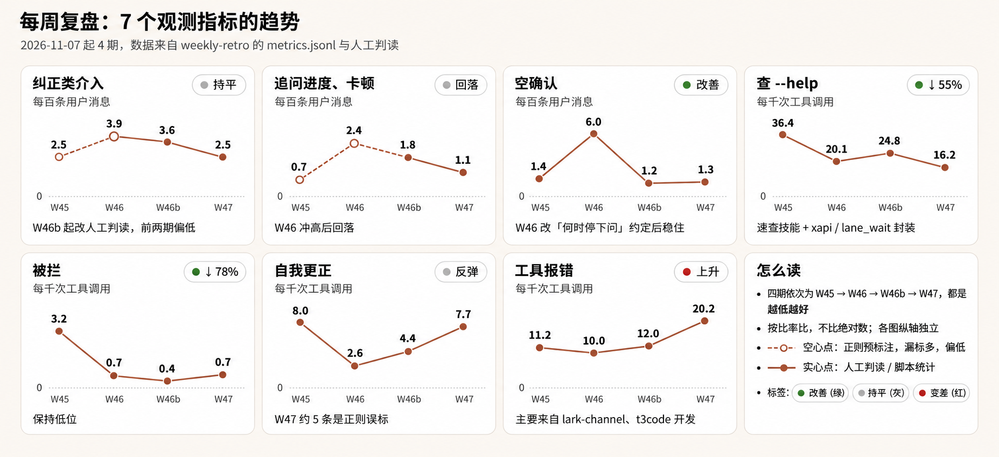

展开目录索引（5 个章节）
Claude 想清楚，Codex 看清楚：把最贵的主上下文留给决策。
以前我习惯在一个主会话里从翻代码、查日志一路干到改逻辑、跑单测。事后拉账才看清真相：主会话开销的大头根本不是输出，而是上下文越滚越大、轮数越来越多后的缓存读（占等效开销约 80%）；按动作拆解，读代码占 ~40%、只读查询占 ~15%、构建测试和端到端占 ~20%，真正改文件只有个位数。
我（Claude · Tech Lead）
负责判断、和用户拍板、写七栏契约、复核 diff 与测试证据，以及执行高风险对外写操作（部署、发版、改 TCC 配置）。绝不亲自翻几十个文件把主上下文喂胖。
codex（gpt-6.1-sol）
负责所有大上下文脏活累活——多文件侦察并带证据回简报、按契约施工并跑通单测、部署后按 e2e-record 调接口看页面留存验收证据。
RESUME）或沿用原任务 ID 返工（TASK）；两轮返工不达标立即熔断。
FIG 02 // CLAUDE-LEAD
标准六步流水线：侦察 → 拍板 → 契约 → 施工 → 复核 → 记账
-
STEP 01
接需求与触发判断（盯任务类型，不靠模型估工作量）
实测模型既估不准工作量，也很难感知上下文长度。触发改为盯任务类型（排查、盘点、读长方案、对比分支、跨模块找调用方）和关键时机（接到任务时、方案拍板那一刻、讨论方案开头）。事实简单就跳过侦察直接写契约；万一忘了派发，连续只读达到阈值（默认
25次）时，posttool_delegate_nudge.pyhook 会自动注入一次委派提醒。 -
STEP 02
① 侦察（交付物：带证据的结论）
独立子问题并行派给 codex。停止条件必须写到要回答的层级（只看到直接报错、没追到具体缺什么不算答完）。如果简报有信息缺口，直接续派同一个 codex 会话追问，绝不污染主会话。
-
STEP 03
② 拍板与写「七栏契约」
读完侦察简报后，先把涉及产品或架构的取舍和用户拍板，再按固定模板写一份十几行的简短契约——工作区快照、固定约束和汇报格式都由
dispatch.sh自动拼装，不靠手抄。 -
STEP 04
③ 施工（交付物：代码 + 单测日志）
改、测、修一起包，单测通过才算交差；涉及外部系统（第三方 API、配置中心、测试环境接口）时，验收必须包含一条真实冒烟，不能只靠离线测试。施工前还要求它对照同类接口先查一遍「契约缺口」，并在汇报里单列。
-
STEP 05
复核、对外写边界与端到端验证
复核时先看「契约缺口」，再查越界告警、diff、测试日志、外部事实；测试日志齐全且与 diff 匹配就直接认，不重复跑。对外写操作（部署、发版、改
TCC等）一律由主管先做，部署完再派 codex 按e2e-record调接口、查库、看页面并留证据。 -
STEP 06
两轮返工熔断 & 记账
返工必须通过
RESUME或TASK聚合到同一任务 ID，绝不另起新任务造假「一次通过率」。每轮复核完都用ledger.py note记一笔（verdict/cause/gap/--hand-fixed），给周复盘和效率分析留事实源。
两轮返工熔断红线：同一任务返工两轮仍不达标，立刻停止返工——改为我自己接手，或者退回「侦察」阶段重新拆解。
复盘台账反复证明：返工几乎都是契约的锅（最常见的是范围画窄、漏了另一端校验或没核实前提）。
七栏契约解剖（点击每一栏展开踩坑经验）
派发给 codex 的七栏简短契约
由 dispatch.sh 自动拼装信封与约束01 硬不变量业务规则、接口契约、已拍板取舍——对不上必停
02 行为范围按行为写，不按文件清单写
03 业务风险只写执行者看不出来的业务红线与放行边界
04 未决口径还没拍板的取舍点
05 待核假设主管没亲手验证过的外部行为或环境规则
06 现场自决迁移编号、命名、文件是否存在等机械事实
07 已知已核实事实、相关 ID、已跑通的工具
把每一次踩坑，从会话里下沉到下次必经的环境资产里。
一次会话里用户纠正了 Agent，那句纠正只活在那个窗口里。我把本机所有项目产生的过程数据——Claude 会话（含各仓库与 worktree）、Codex 会话（含子任务）、T3 线程（按需补 antigravity）、hook 命中日志——接进了三层节奏的维护闭环：
| 节奏 | 模块 | 触发时机 | 核心职责 |
|---|---|---|---|
| 需求级 | wrapup |
单个需求结束 | 核实合入 → 清理 worktree → 提炼跨需求经验（人确认后升入长期层）→ 归档需求记忆和笔记 → 清掉失效引用 |
| 周度主力 | weekly-retro |
每周五晚 | 跑跨期指标、捞失败点、拐点四问卡归因、三层分诊选药、人拍板落补丁、反事实重放验收 |
| 元调优 | retro-tune（ references/tune.md） |
每 2 期 （ tune_due.py 判定） |
审视复盘本身：介入降了没、改动有效率、动静比、hook 误拦率、回放区分度、采纳率、漏报与成本 → 改进复盘本身 |

点击放大查看原图weekly-retro 完整机制全景：上层为输入/循环/资产流转，中层展开「失败点 → 拐点四问卡 → 三层分诊」，底层汇总跨期观测指标。
FIG 03 // WEEKLY-RETRO
weekly-retro 八步闭环
-
01 回填上期
先翻旧账，再看是否到期元评估
对照上期
ledger/changes.md里标为「待验证」的补丁，用本周真实指标和回放结果逐条判为「有效 / 无效 / 仍待验证」；同时跑tune_due.py判断本期是否顺手做一次retro-tune。 -
02 收集数据
跑
scan.py出指标、做记忆体检与turns.tsv早期踩过一个大坑：介入类正则只标出 1 条纠正，人工通读却读出 10 条。所以现在正则只降级为预标注，真正判读靠通读
turns.tsv，漏掉的说法再反哺进正则。 -
03 找失败点
核心纪律：人插手即失败（拍板、补需求不算）
集中捞 5 类信号：用户纠正（做错了人来改）、追问进度/卡顿（过程看不见）、空确认（不该停却停下来问）、自我更正/震荡（同类调用反复失败），以及高频高成本流程（
flows）（没出错也没人纠正，但动辄跑十几步、反复查--help或手写 ID）。 -
04 拐点归因
用
turn.py回看那一回合，填「拐点四问卡」直接调出第一次偏离最优路径那一刻 Agent 窗口里的上下文——搞清当时是缺信息、脏信息还是假信号，固定写四行：现象（做了 A，期望 B）/ 归因（缺了什么、多了什么）/ 下沉（哪个组件该喂信号）/ 验收（不靠人也能收敛）。
-
05 三层分诊
感知 / 动作 / 反馈三层选药，动态补丁绝对优先
按 Agent 在对的时刻真正用得上的把握排序：命令执行时的 hook ≈ 常驻上下文（全局约定、技能描述） > 技能正文 > 记忆。能拦截或封装成脚本的，绝不只写一句文档约束。
-
06 用户确认
每期 ≤ 5 条补丁，人逐条采纳或驳回
严控变更密度，其余进观察池；被驳回的建议和理由同样写进
retro.md，供后续元调优核查归因是否跑偏。 -
07 落地 + 重放
全新无头只读会话反事实重放验收
每条采纳的发现至少写一道只读回放题放进
$RETRO_DIR/replays/，由replay.py新开不给提示的无头 Codex 会话作答、模型裁判判分（纯正则在否定句里极易误判）。回放没通过，直接打回 05 重新分诊。 -
08 记账汇报
沉淀事实源，留给下周五回填
指标追加进
metrics.jsonl，补丁记入ledger/changes.md（标为「待验证」），完整结论写入本期retro.md。
三层分诊与动态优先补丁矩阵
| 问题分层 | 典型症状 | 动态补丁（优先） | 静态补丁（做不成动态才兜底） |
|---|---|---|---|
| 感知层 | 不知道规则、找不到入口、被长输出噪音淹没 | 前置检查脚本：一次输出关键事实，做好输出截断和过滤 | 入口与约定：技能描述、全局约定、入口地图、状态记忆 |
| 动作层 | 工具不会用、参数总传错、多步连招繁琐 | 封装成脚本：高频多步压成一条命令（如 xapi、lane_wait） |
已验证写法：写进速查技能（如 xagent-ops-cli） |
| 反馈层 | 走错了自己不知道、报错看不懂、最后才爆雷 | hook 拦截：执行前当场拦下，给出报错 + 修复提示 | 经验记忆：沉淀为 feedback / reference 记忆 |
跨 Agent 兼容边界：hook 只对 Claude Code 生效；如果一个问题同时影响 Codex，必须优先做成共享脚本或前置检查脚本，辅以全局约定，避免补丁只在单侧生效。
不信「体感变好了」：连续四期跨期比率与资产健康度追踪。
从 2026-11-07 起连续记录了 4 期（W45 → W46 → W46b → W47）。因为每周任务量差几倍，所有指标一律按比率对比、不比绝对数（介入类按「每百条用户消息」，工具类按「每千次工具调用」，都是越低越好）。其中 W46b 起介入类从正则预标注升级为人工通读判读——折线图里空心点表示早期正则值（漏标偏低），实心点代表人工判读或脚本精确统计。
36.4 → 16.2 · 速查技能与 xapi / lane_wait 封装直接见效
3.2 → 0.7 · 持续稳定在极低水位

点击放大查看原图7 项核心趋势指标明细
| 观测指标 | 统计口径 | W45 → W46 → W46b → W47 | 状态 | 归因与解读 |
|---|---|---|---|---|
| 纠正类介入 | / 百条消息 | 2.5 → 3.9 → 3.6 → 2.5 |
持平 | W46b 起改人工判读，前两期正则漏标偏低 |
| 追问进度、卡顿 | / 百条消息 | 0.7 → 2.4 → 1.8 → 1.1 |
回落 | W46 冲高后逐步收敛，过程可见度改善 |
| 空确认 | / 百条消息 | 1.4 → 6.0 → 1.2 → 1.3 |
改善 | W46 修订「何时停下问」全局约定后稳住 |
查 --help |
/ 千次调用 | 36.4 → 20.1 → 24.8 → 16.2 |
↓ 55% | 速查技能 + xapi / lane_wait 封装明显减噪 |
| 被拦（权限/安全） | / 千次调用 | 3.2 → 0.7 → 0.4 → 0.7 |
↓ 78% | 持续保持低位，越界操作大幅下降 |
| 自我更正 | / 千次调用 | 8.0 → 2.6 → 4.4 → 7.7 |
反弹 | W47 含约 5 条正则误标，归入元调优修口径 |
| 工具报错 | / 千次调用 | 11.2 → 10.0 → 12.0 → 20.2 |
上升 | 主要来自 W47 密集开发 lark-channel 与 t3code |
同步盯紧的 5 项环境资产健康度
回放通过率
W47 补丁题 3/3 通过（补丁前基线全失败），证明改动真的改变了行为而非安慰剂；也用来保护「删减旧约定」不回退。
技能与封装采用率
W47 ops-cli 被调用 351 次居首；flows 同步监控专用工具采用率 tool_share，确保封装真的被用起来。
hook 自测与记忆体检
每条 hook 规则自带 # retro-selftest 验证活性，连续 3 期零真实命中提议删；记忆索引 W46b 13979 → W47 15500 字节，已入减法清单。
目录结构、一键安装、环境变量与日常命令速查。
1. 本地仓库目录结构
rstack/
├── install.sh # 一键软链安装技能，--hooks 可选合并 Claude Code hook
├── global/
│ └── AGENTS.example.md # 配合两套技能的全局约定模板（CLAUDE.md / AGENTS.md）
├── hooks/
│ ├── pretool_guard.py # PreToolUse(Bash) 守卫（默认 ask，确定必败才 deny，带自测）
│ ├── posttool_delegate_nudge.py # PostToolUse 连续只读 N 次注入委派提醒（不拦截）
│ └── install_hooks.py # 幂等合并进 ~/.claude/settings.json（自动先备份）
├── skills/
│ ├── claude-lead/
│ │ ├── SKILL.md # 派发判断依据、七栏契约、复核与记账规范
│ │ ├── DESIGN.md # 每条规则背后的台账依据与踩坑笔记
│ │ ├── references/ # brief-template.md / envelope.md / 汇报模板
│ │ ├── scripts/
│ │ │ ├── dispatch.sh # 拼工作区快照 + 契约 + 固定约束，后台跑 codex 并自动记账
│ │ │ ├── ledger.py # 台账：note / stats / efficiency / list
│ │ │ └── timing.py # 复算派发时机与结果、调校委派提醒阈值
│ │ └── ledger/retro.md # 委派复盘记录模板
│ └── weekly-retro/
│ ├── SKILL.md # 八步复盘流程
│ ├── DESIGN.md # 方法论与指标口径踩坑记录
│ ├── config.example.json # 扫描配置示例（常用 CLI 与流程领域表）
│ ├── references/tune.md # 每两期一次的复盘元评估
│ ├── replays/examples/ # 只读回放题 JSON 示例
│ ├── ledger/ # changes.md / tune-log.md 模板
│ └── scripts/
│ ├── scan.py # 扫描全量会话，产出 metrics.json、samples.md、turns.tsv
│ ├── turn.py # 批量拉出介入拐点之前那一回合的轨迹
│ ├── replay.py # 无头只读 Codex 反事实重放 + 模型裁判
│ └── tune_due.py # 判断本期是否到期评估复盘本身
└── docs/ # 设计框架图与生成脚本（gen_diagrams.py）2. 环境依赖与安装
前置依赖：Claude Code、已登录的 Codex CLI、Python 3.9+、Bash、Git，以及 GNU coreutils 提供的 timeout / gtimeout（macOS 可执行 brew install coreutils）。
# 1. 软链安装技能到 ~/.claude/skills 和 ~/.codex/skills（已有同名技能自动跳过）
bash install.sh
# 2. 可选：幂等合并 PreToolUse 守卫和委派提醒 hook 到 ~/.claude/settings.json（改前自动备份）
bash install.sh --hooks
接着完成两步配置：① 把 global/AGENTS.example.md 里需要的约定合进你的全局规则（Claude Code 读 CLAUDE.md，Codex 读 AGENTS.md）；② 扫描开箱可用，如需定制自己的常用 CLI 或流程领域，复制 skills/weekly-retro/config.example.json 到 $RETRO_DIR/config.json 按需修改。
3. 常用环境变量
| 环境变量 | 作用 | 默认值 |
|---|---|---|
MODEL / EFFORT / SERVICE_TIER |
dispatch.sh 调用 codex 的模型、推理强度、服务档 |
codex 配置 / medium / 默认 |
TIMEOUT |
单次派发超时时间（秒） | 1800 |
DELEGATE_WRITABLE |
派发时长期放行的可写目录（如 CLI 登录态、构建缓存） | 无 |
NUDGE_THRESHOLD |
委派提醒阈值（连续只读工具调用次数） | 25 |
RETRO_DIR |
个人复盘记录、台账与回放题存放目录 | ~/notes/retro |
RETRO_CONFIG |
scan.py 扫描配置文件路径 |
$RETRO_DIR/config.json |
REPLAY_MODEL |
反事实重放与模型裁判使用的模型 | codex 默认 |
4. 日常派发与每周复盘命令速查
# 新派任务（交付物填：结论 或 代码；一律后台运行等通知，不轮询）
"$DG/dispatch.sh" <workdir> <brief.md> <结论|代码> <标签>
# 续派同一 codex 会话（追问或返工，brief 只写增量）
RESUME=<task_id|run目录> "$DG/dispatch.sh" - <brief.md>
# 沿用原任务 ID 开新会话返工（换 worktree 或会话）
TASK=<原task_id> "$DG/dispatch.sh" <workdir> <brief.md> 代码 <标签>
# 每轮复核后记账（手修过必加 --hand-fixed）
"$DG/ledger.py" note <run目录> --verdict <pass|partial|fail|stop> \
[--cause <原因>] [--gap <契约缺口>] [--hand-fixed] --level <低|中|高> \
--task "<任务简述>" --comment "<复核结论>"
# 定期看统计、效率、token 转移比例与 hook 提醒阈值回放
"$DG/ledger.py" stats --since <YYYY-MM-DD>
"$DG/ledger.py" efficiency --since <YYYY-MM-DD>
"$DG/timing.py" --since <YYYY-MM-DD># 首次验证 Codex 回放链路（使用内置合成例题）
python3 -I skills/weekly-retro/scripts/replay.py --example --out "$(mktemp -d)"
# 第 1 步：检查本期是否到期做「复盘元评估」
python3 -I "$WR/scripts/tune_due.py"
# 第 2 步：扫描窗口内会话，输出指标、样本与人工判读表 turns.tsv
python3 -I "$WR/scripts/scan.py" --since <起点> --until <终点>
# 第 4 步：批量拉出失败拐点之前那一回合的完整上下文轨迹
python3 -I "$WR/scripts/turn.py" '<会话标识>|<月-日 时:分>|<关键词>'
# 第 7 步：补丁落地后，开无提示只读新会话做反事实重放验收
python3 -I "$WR/scripts/replay.py" --out <本期目录> --only <题号>5. 本地数据落盘与三条实践护栏
本地数据与隐私边界（不进技能仓）
- 复盘资产：报告、
metrics.jsonl、ledger/changes.md、tune-log.md与replays/*.json落在$RETRO_DIR（默认~/notes/retro），写回放题前先脱敏凭证。 - 派发产物：契约、输出和 diff 存于
~/.local/share/agent-delegate/runs/，台账存于~/.local/state/agent-delegate/。 - hook 日志：命中记录落
~/.local/state/agent-hooks/hits.jsonl（仅记规则名、决策、会话 ID 与是否自测，不保存命令原文和工作目录）。
给想抄作业的人：三条护栏
- 补丁宁少勿多：每期上限 5 条且必须人逐条拍板；只改个人环境，业务代码与团队仓库规则文件只提建议。
- 一定要做减法：连续 3 期零真实命中的 hook 删掉、长期 100% 通过的回放题降频或退役、记忆索引定期瘦身，防止环境资产反噬成感知噪音。
- 按自己的台账改：别把我的数字当教条，搬到你的工作流后按
timing.py与metrics.jsonl真实数据动态调校。
文中专有名词速查表
涉及自建脚本、内部工具和约定代号，输入关键词即可实时过滤定位：
- rstack
- 我个人维护的本地 AI 工程环境资产仓，汇总了
claude-lead、weekly-retro两套技能、配套脚本、全局约定和 Claude Code hook。 - Claude / Codex（gpt-6.1-sol）
- 双 Agent 组合：前者担任主控主管（推理、拍板、写契约、复核、执行对外写操作），后者担任执行者（大上下文侦察、按契约施工、单测与 E2E 验证）。
- claude-lead / weekly-retro / wrapup / retro-tune
- 四块协作流程，分别负责日常双 Agent 委派、每周五晚八步复盘、单个需求结束收尾、每两期一次的复盘元评估（对应
references/tune.md与tune_due.py）。 - dispatch.sh / ledger.py / timing.py
claude-lead配套脚本，分别负责拼装信封并后台派发 codex、记录与统计派发台账、分析派发时机与委派提醒阈值。- scan.py / turn.py / replay.py / tune_due.py
weekly-retro配套脚本，分别负责扫描会话出指标与turns.tsv、回看失败拐点轨迹、拉起只读无头会话做反事实重放验收、判断元评估周期。- pretool_guard.py / posttool_delegate_nudge.py
- 两枚 Claude Code hook：前者在执行高风险 Bash 命令前拦截或确认（支持
# confirmed-by-user豁免与# retro-selftest自测），后者在主会话连续只读超阈值时提醒委派。 - xapi / lane_wait
- 动作层动态补丁代表：把高频多步命令封装成一条短命令，显著压低查
--help频率和传参出错。 - xagent-ops-cli（ops-cli）
- 动作层静态兜底代表：把已验证过的运维/操作命令写法沉淀成速查技能，W47 以 351 次调用居技能使用榜首。
- e2e-record
- 端到端验证规范，指导 codex 在部署后调接口、查库、看页面并留存验收证据供主管复核。
- TCC
- 外部配置中心；改配置与部署、发版同属高风险对外写操作，约定必须由主管（Claude）先执行。
- T3 线程 / antigravity / t3code / lark-channel
- 本机涉及的多工具线程来源与日常开发项目（如
t3code、lark-channel为 W47 密集开发项，也是当期工具报错上升的主要来源）。